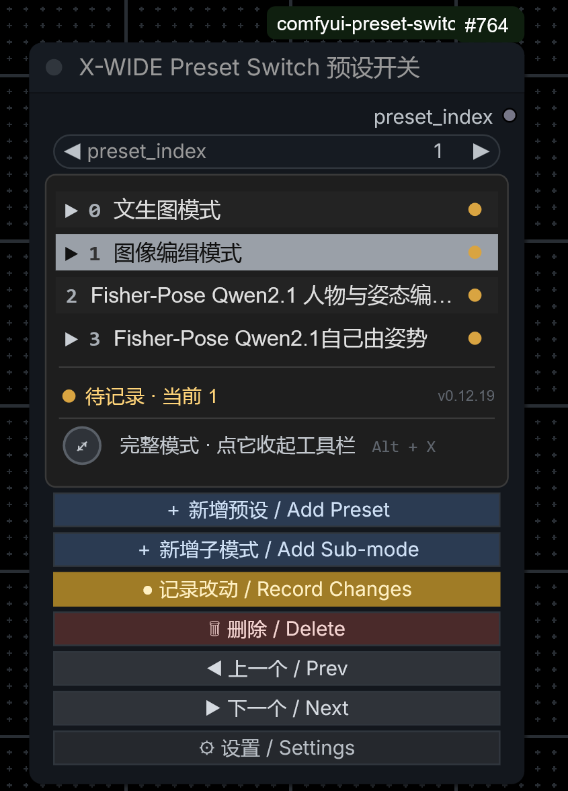

comfyui_workflow_preset_switch 升级 · GPL-3.0
点「记录当前」的时候，插件会把画布上每一个节点的当前状态原样记下来 —— 不只是提示词和参数，还包括：
也就是说：预设之间的切换，会把这四类东西全部换掉，而不只是换提示词。
假设你有两份预设：图像编辑模式和文生图模式。
另外还有一条更隐蔽的机制：预设里没被记录过的节点，默认会被「未记录节点策略」 整个旁路掉（见第 7 节）。所以那几张图丢失，有可能是被覆盖，也有可能是 LoadImage 节点整个被跳过了。
把不想让预设插手的节点排除记录（下一节）。排除之后它们就完全交给你手动管， 上面两条机制都不会再碰它们。
| 方法 | 操作 |
|---|---|
| 画布右键（最快） | 选中一个或多个节点 → 右键 → 🚫 排除记录 / Exclude from recording |
| 排除清单窗口 | 在画布空白处右键 → 📋 排除记录清单；或打开插件的设置窗口 → 「排除记录」→ 打开清单 |
清单窗口里每一行是一个节点，左边那个按钮就是开关：
| 行为 | 被排除的节点 |
|---|---|
| 点「记录当前」时 | 不进快照，不会被记下来 |
| 切换预设时 | 控件值、模型、图片一概不改 |
| 启用 / 跳过 / 停用状态 | 不碰 |
| 「未记录节点策略」 | 豁免，不会被旁路掉 |
| 面板的「待记录」判定 | 不参与 —— 它变了不会让预设变黄 |
| 缺失节点红点 | 不参与 |
名单是整个工作流共用一份，对该工作流里的所有预设都生效。 它跟着工作流一起保存，所以换台机器打开还是有效的。
节点编号只在这一个工作流里有意义，所以名单不会跨工作流生效 —— 在别的作品里要重新排一次。
排除之后，老预设里原有的记录不会被删掉，只是切换时跳过它们。 所以万一你后悔了，把排除取消，那些老记录立刻又能用。
LoadImage / LoadImageMask / 各种图片载入节点 —— 你举的 6 张图的例子CheckpointLoaderSimple、UNETLoader、VAELoader、LoraLoader…预设开关节点自己（Preset Switch）本来就不参与记录，也不会出现在清单里。
X-WIDE/Preset → PresetSwitch。preset_index 滑块来切换。| 看到的东西 | 意思 |
|---|---|
表头 ● 已记录 · 当前 0 | 当前这份预设的状态：● 已记录绿、● 待记录黄（有改动没存）、● 未记录红 |
| 行尾的小圆点 | 那一份预设的状态（和表头同一个含义，逐份显示） |
行尾的 ! 红标 | 那份预设记录过的节点里有已经不在画布上的，点它可以看清单 |
| 左下角的圆形开关 | 清爽模式开关，点一下收起 / 展开工具栏 |
面板下方那一排按钮：＋ 新增预设、＋ 新增子模式、 记录 / 覆盖（会跟着状态变色、还会呼吸）、删除、上一个、下一个、设置。
子模式挂在某个主预设下面（编号像 0.1、1.2）。
切换到子模式时，插件会先套用它的父预设，再叠加子模式自己记的差异。
适合「同一套流程，只换一小部分参数」的情况 —— 父预设记大框架，子模式记那几个变量。
| 默认键 | 作用 |
|---|---|
| Alt + X | 进入 / 退出清爽模式（收起工具栏，只留预设列表）。可以在设置里改成「收起整个面板」。 |
| Alt + Z | 把预设开关节点搬到你鼠标底下：鼠标停在画布哪儿，节点就调到哪儿， 顺手选中它、闪一下金色边框告诉你「在这儿」。 鼠标不在画布上时（比如停在侧边栏），退回「把画面移到节点上」。 |
两个键都能在设置窗口里改，也可以清空。设置窗口里会实时提示组合键有没有冲突。
这一条容易让人困惑，但它很重要。当你切到某份预设时，画布上可能有一些节点 从来没有被这份预设记录过（比如你后来新加的）。对它们有三种处理：
| 策略 | 行为 |
|---|---|
| 旁路（默认） | 把那些节点设为「跳过」—— 执行时不算它们 |
| 启用 | 把它们设为「启用」 |
| 保持原样 | 什么都不做 |
默认的「旁路」很可能就是原因：LoadImage 如果没被那份预设记录过，切过去时会被整个跳过。 把这类节点排除记录就能彻底避免。
预设记录过的某个节点被删掉了，那一行的行尾会出现一个红色 !。
点它能打开清单，看到底缺了哪几个，并选择：
点不中那个小感叹号时，也可以右键点预设开关节点，菜单里会列出缺节点的预设。
这是 ComfyUI 自己的提示，不是插件的弹窗 —— 它是说浏览器 localStorage 写满了 （配额约 5MB）。工作流草稿就存在那里。
本插件会把预设数据一起存进工作流，节点多、参数大的工作流很容易顶到上限。 从 v0.12.17 起已经做了两件事：
如果你还在看到这个提示：
v0.12.17 修掉了。原因是布局自检的判据把标题栏高度算漏了，导致每 250ms 误判一次 「控件被挤出节点」，然后清掉所有控件坐标强行重排 —— 而 ComfyUI 判断「点到了哪个控件」 正好依赖那份被清掉的坐标，所以那一瞬间点击会丢。升级后就好了。
这是有意为之：一个工作流只允许有一个在用的预设开关。 第二个会被自动停用（节点上画一条暗红提示），避免两个控制器互相打架。 选中它按 Delete 删掉即可。
不会。面板里的名字太长会用省略号截断，节点宽度也可以自己拖。
见第 7 节的「未记录节点策略」。不想要这个行为，可以在设置里把它改成 「保持原样」，或者把这些节点排除记录。
| 数据 | 位置 |
|---|---|
| 预设（记录了什么节点、什么参数） | 工作流文件内部，跟着 .json 一起走。换机器、发给别人都在。 |
| 排除记录名单 | 同上，也在工作流文件内部 |
| 快捷键、缩放范围、署名等设置 | 浏览器本地，所有工作流共用 |
插件不联网、不上传任何东西，也不依赖任何第三方 Python 包。